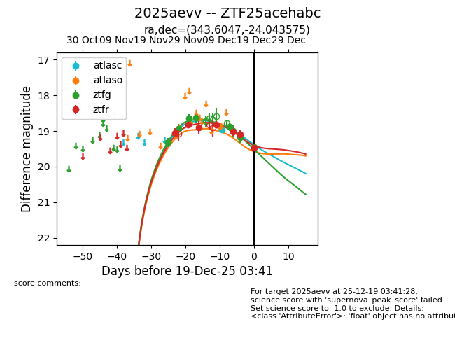
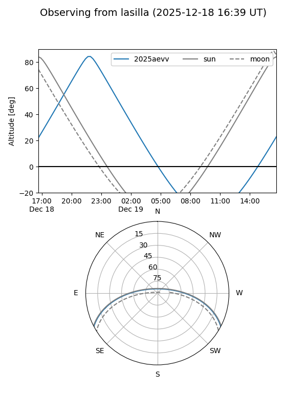
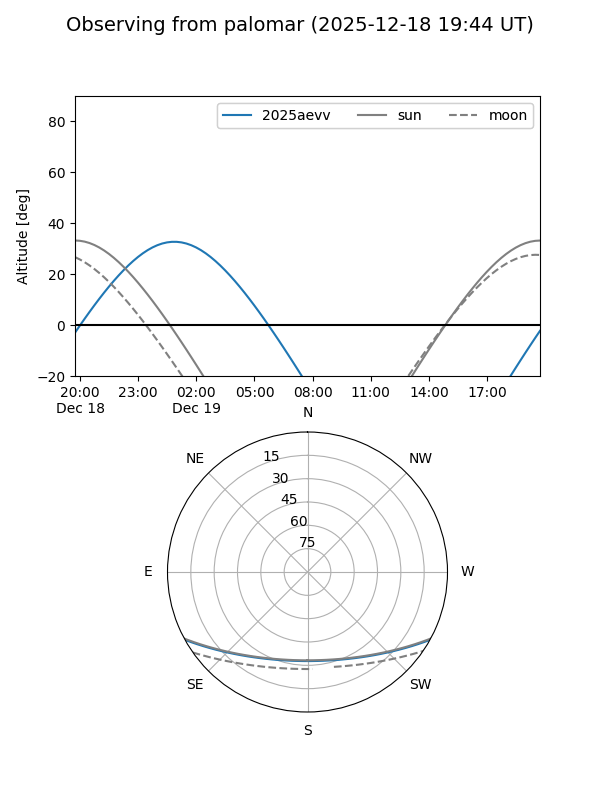
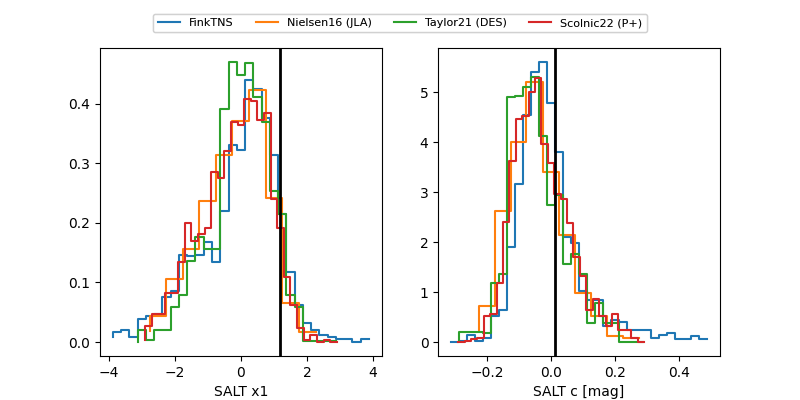

2025aevv
Target 2025aevv at 2025-12-31 16:59
Aliases and brokers:
FINK:
Lasair:
ALeRCE:
TNS:
YSE:
alt names
ZTF25acehabc (ztf,fink_ztf)
2025aevv (tns,yse)
Coordinates:
equatorial (ra, dec) = 343.6047,-24.04358
equatorial (HMS+DMS) = 22:54:25.13,-24:02:36.87
galactic (l, b) = (33.0217,-63.49388)
Flags:
Photometry:
last atlasc=18.96, atlaso=18.87, ztfg=19.46, ztfr=19.47
1 atlasc, 1 atlaso, 8 ztfg, 7 ztfr detections
Lightcurve

Visibility


Additional plots
